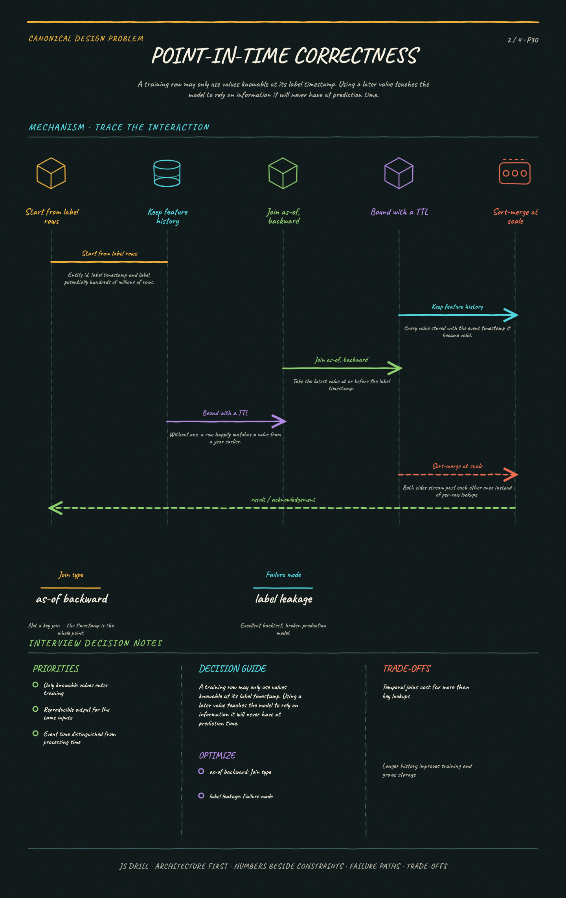

https://frosty110.github.io/js-drill/assets/system-design/infographics/design-problems/p30/point-in-time-join.pngServe the same features to model training and to online inference without them disagreeing. The signature challenge is training/serving skew — the silent failure where a model scores well offline and badly in production because the numbers it sees at request time were computed differently.
All questions, model answers and diagrams for Design a Feature Store →